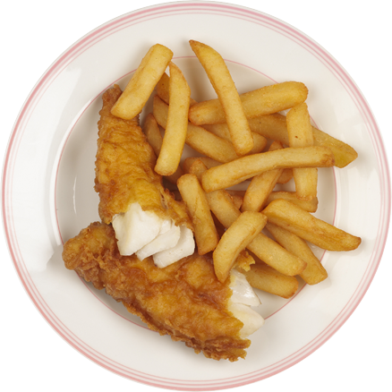

fish and chips.
just like mom used to make.
ABOUT US
A Salt & Battery is your new favourite go-to for family meals.
We take care to provide the finest fish delivered daily to our store, to make your tastebuds tingle. The crispiest fries pair with our delectable battered fish to provide a family pleasing combination that will make you the hero of dinner time.
Founded in 1995 by George Martin, our batter recipe has been handed down and closely guarded to make us stand out from the rest.
Come by, make us your new favourite meal.
“Fish might stink, but I make it taste good”- George Martin